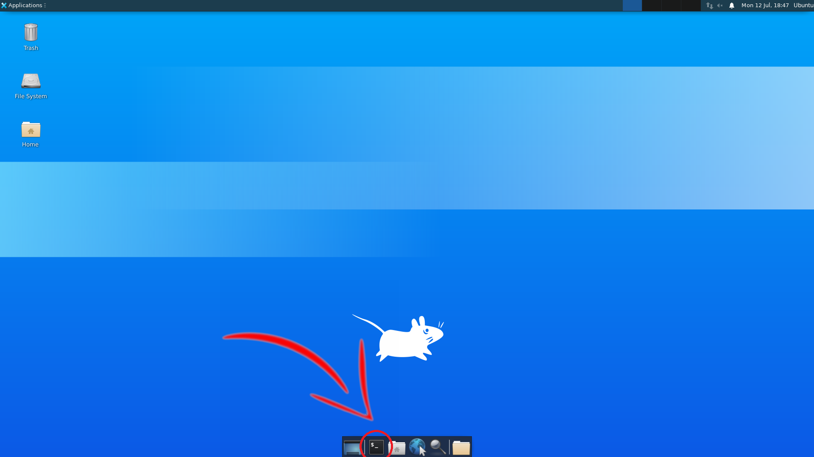
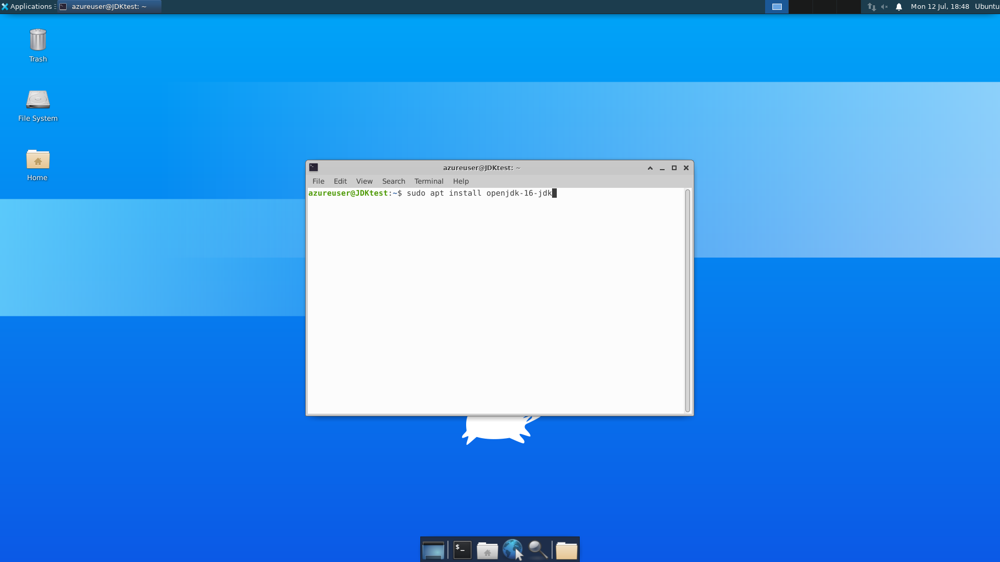

Installing OpenJDK on Linux Virtual Machine
Terminal Emulator
Open the Terminal Emulator in the Linux Virtual Machine. 
Type
sudo apt install openjdk-16-jdk
into Terminal Emulator

Type
Y
to continue. It may take a few more seconds to install.
Type
FILENAME.java
to create a file. This will also open up the file editor.
Type
java FILENAME.java
to run program.